|
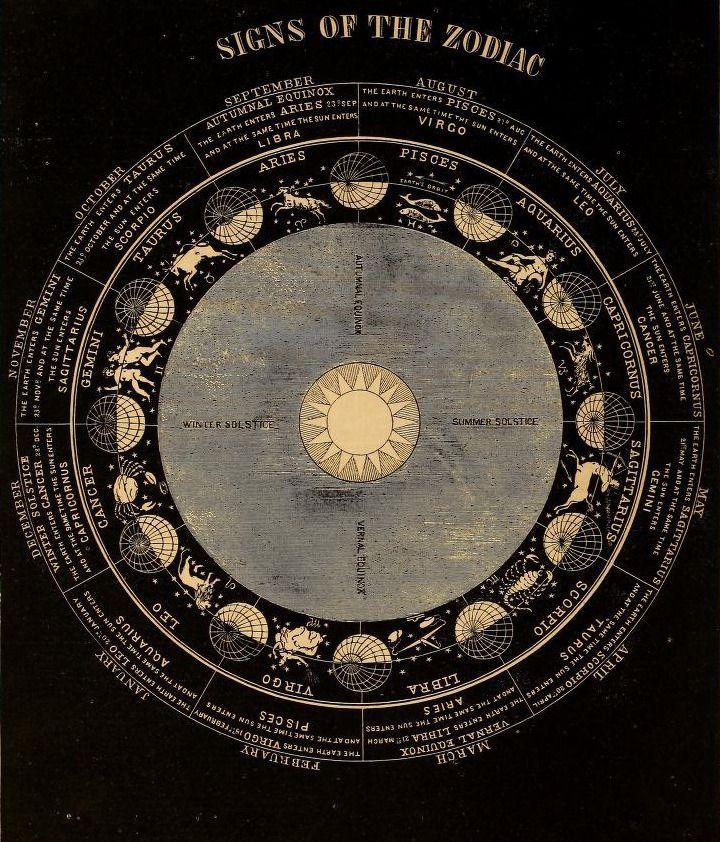
|
☆ Знак Зодиака ☆ |
☆ Влияние ☆ |
☆ Символ ☆ |
☆ Цвета ☆ |
☆ Металл ☆ |
☆ Камни ☆ |
☆ Цветы ☆ |
☆ Талисман ☆ |
☆ Анатомическая эмфаза ☆ |

|
Скорпион (24 октября - 22 ноября). |
Плутон. |
Скорпион, змееносец, знак смерти, светильник, пирамида. |
Желтый, темно-красный, алый, малиновый. |
Железо, сталь. |
Аквамарин, карбункул, коралл, берилл, рубин, лунный, хрусталь, топаз, малахит. |
Гвоздика, пион, хризантема. |
Жук, скорпион, знак смерти. |
Половые органы, позвоночник, сердечно-сосудистая система. |

|
Стрелец (23 ноября - 21 декабря). |
Юпитер. |
Кентавр - срелок, звезды, жезлы, поднятый указательный палец. |
Синий, голубой, фиолетовый, багровый. |
Топаз, аметист, хризолит, бирюза, опал, карбункул, сапфир, изумруд, агат. |
Цинк, жесть. |
Нарцисс, василек, пальма. |
Подкова, Саламандра. |
Бедра, суставы, печень, головные и горловые заболевания до 30 лет, нервные (мозговые) после 50 лет, расширение вен, щитовидная железа. |

|
Лев (23 июля - 23 августа). |
Солнце. |
Лев, лебедь. |
Пурпурный, золотой, оранжевый, алый, черный (белый цвет — неудачный). |
Янтарь, хризолит, топаз, рубин, оникс, алмаз, эсмеральд. |
Золото. |
Пионы, ноготки, гладиолусы, хризантемы. |
Божья коровка, лев, орел. |
Сердце, ткани, артерии, сетчатка глаз, мочевой пузырь, ревматизм, психоимпотенция. |
|
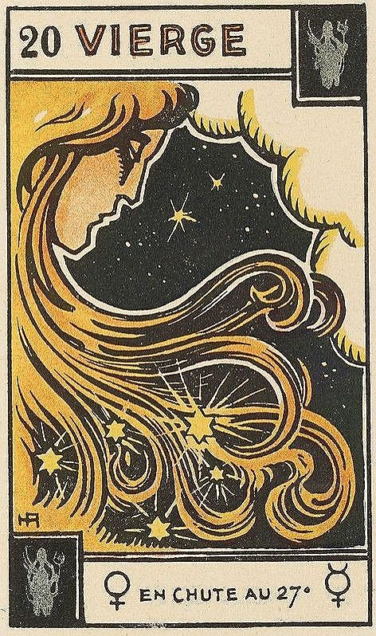
|
Дева (24 августа - 23 сентября). |
Меркурий. |
Дева, куб, чан. |
Белый, голубой, фиолетовый, зеленый. |
Нефрит, сердолик, желтый сапфир («кошачий глаз»), агат, яшма, малахит, топаз, хризотопаз, мрамор. |
Олово, медь. |
Астры, мать-и-мачеха, красные маки. |
Кузнечик, астра. |
Печень, желудок, кровь, кишечник, нижние конечности, колиты, общая нервозность. |
|
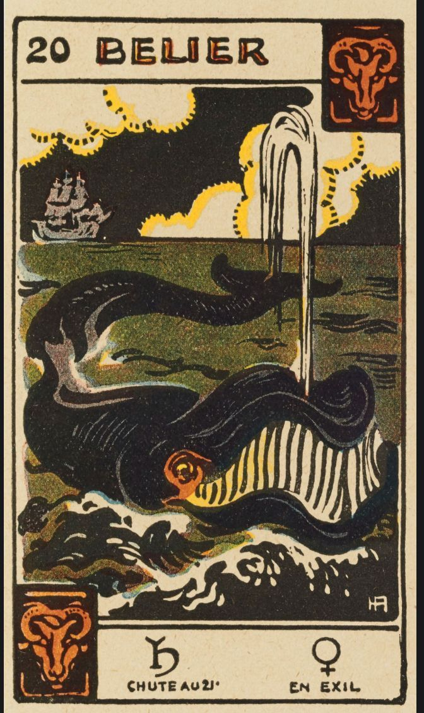
|
Водолей (21 января - 20 февраля). |
Сатурн. |
Водолей, серебряные руки, крылья, полет птиц и самолетов, зигзаги, юность, мудрец. |
Серый, лиловый, сине-зеленый, фиолетовый (черный цвет — неудачный). |
Гранат, циркон, светлый сапфир, опал, аметист, лазурит. |
Фиалка, мирт, нарцисс. |
Олово. |
Ключ, икона. |
Голень, лодыжки, икры, мышцы. |

|
Рыбы (21 февраля - 20 марта). |
Венера, Юпитер. |
Две плывущие в разные стороиы Рыбы, раковина, волна. |
Пурпурный, фиолетовый, морской зелени, синий, лиловый, морской волны, стальной. |
Жемчуг, аметист, изумруд, сапфир, лунный. |
Нарцисс, крокус, жасмин, фиалки, незабудки. |
Цинк. |
Узел (вензель), нарцисс. |
Ступни, пальцы, нервная система (сердце). |

|
Рак (22 июня - 22 июля). |
Луна. |
Рак, краб, сердце. |
Белый, светло-голубой, синий, серебряный, цвет зеленого горошка (серый цвет — неудачный). |
Лунный камень, изумруд, рубин. |
Жимолость, водяные лилии, все белые цветы, жасмин. |
Серебро. |
Клевер, сердце. |
Желудок, легкие, кишечник, подверженность инфекциям. |
|
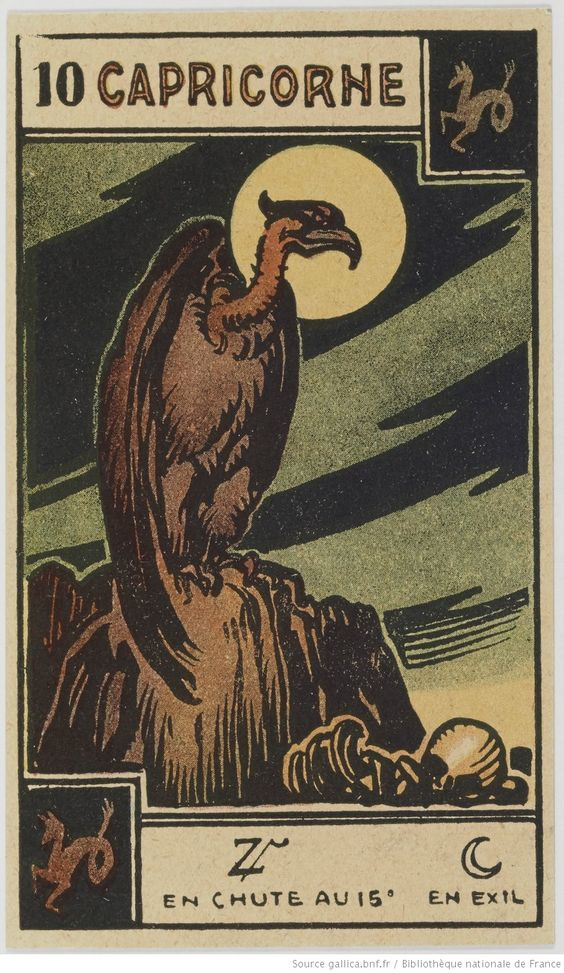
|
Козерог (22 декабря - 20 января). |
Сатурн, Марс. |
Козел, лестница, башенные часы. |
Темно-зеленый, черный, пепельно-серый, синий, бледио-желтый, темно-коричневый и все темные тона. |
Рубин, оникс, гранат, лунный, лазурит. |
Свинец. |
Белая гвоздика, черные маки, плющ. |
Черный кот, дьявол. |
Желчный пузырь, кожные заболевания, костный скелет, печень, желудок. |
|
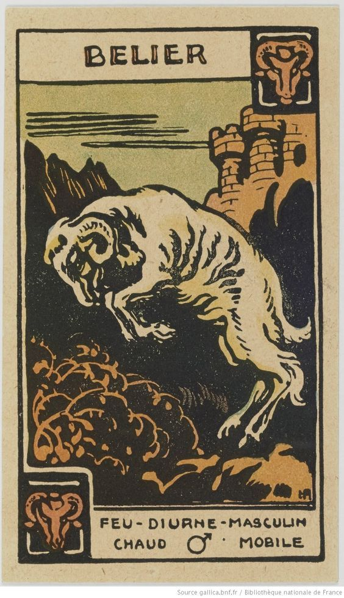
|
Овен (21 марта - 20 апреля). |
Марс, Солнце. |
Баран, олень, красно-желтые и зеленые квадраты. |
Ярко-красный, кармин, оранжевый, голубой, сиреневый, малиновый и все блестящие (фиолетовый цвет — неудачный). |
Алмаз, рубин, аметист, кровавик, гелиотроп, лунный, аквамарин, изумруд. |
Боярышник, анемон (ветренница), душистый горошек, фиалка, василек. |
Железо, сталь. |
Молот, золотое руно. |
голова, лицо. |

|
Весы (24 сентября - 23 октября). |
Вснера, Сатурн. |
Весы, книга. |
Темно-голубой, зеленый, морской волны и пастельные тона. |
Опал, лазурит, коралл, алмаз, саифир, жемчуг, берилл, лунный камень, зеленая яшма, хрусталь, хризолит. |
Бронза. |
Календула (ноготки), розы, фиалки. |
Сердце, книга. |
Почки, нервная система, поражение рук и ног, нефриты, колиты. |
|
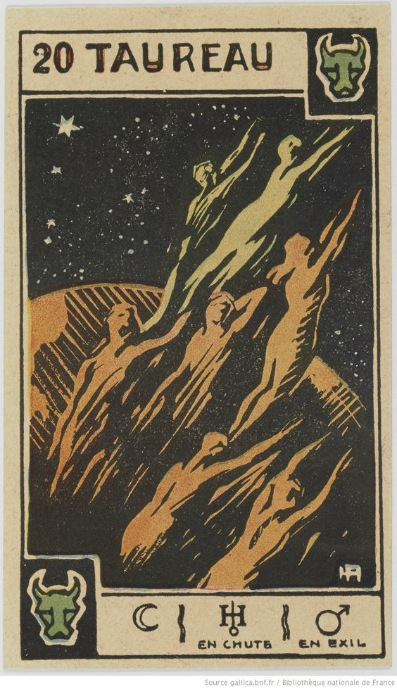
|
Телец (21 апреля - 20 мая). |
Венера, Луна. |
Бык (крылатый), корова (крылатая). |
Лимонный, желтый, ярко-голубой, глубокий оранжевый, лимонно-зеленый, оранжевый и все весенние (красный цвет — неудачный). |
Бирюза, сапфир, агат, опал, изумруд, эсмеральд, зеленый мрамор, нефрит. |
Ландыш, сирень. |
Медь. |
Сова, золотой телец. |
Горло, шея, нос, органы чувств. |
|
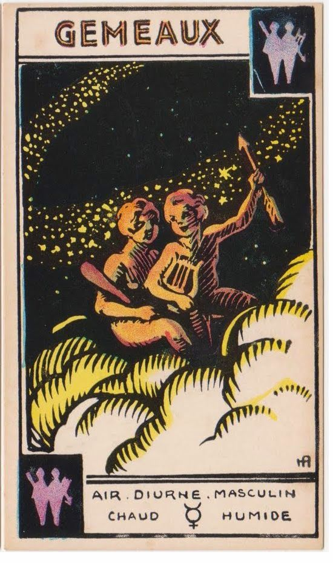
|
Близнецы (21 мая - 21 июня). |
Меркурий. |
Близнецы, маска, рука, звезда. |
Фиолетовый, серый, светло-желтый, серо-голубой, оранжевый (зеленый цвет — неудачный). |
Хризопраз, берилл, гранат, горный кристалл, агат, яшма. |
Маргаритки, маки, лютики, жасмин, нарцисс. |
Золото, амальгама, серебро. |
Змея, маска. |
Плечи, предплечья, кисти рук. |


 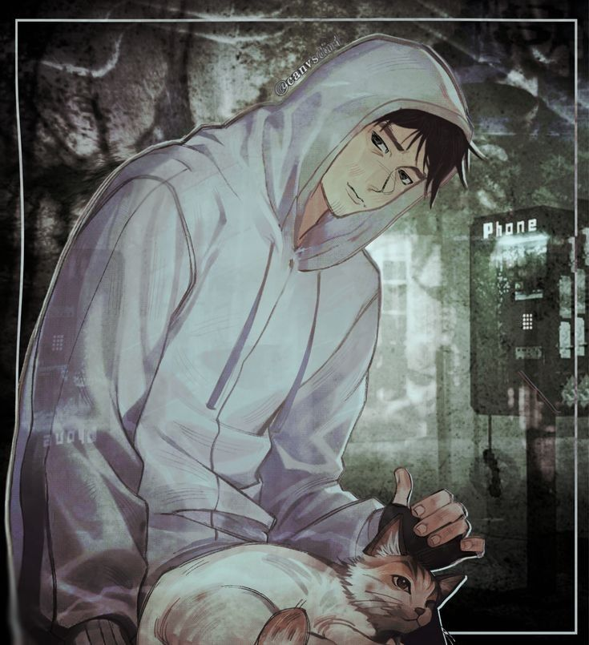
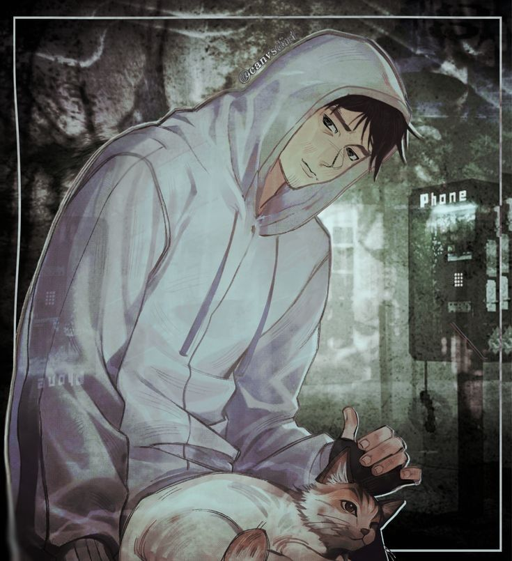


 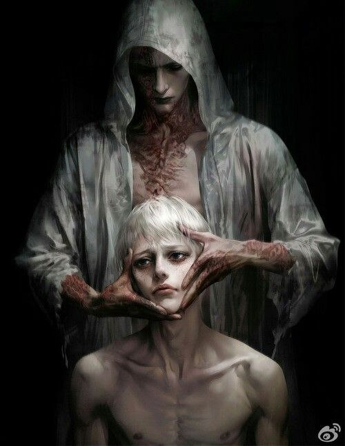
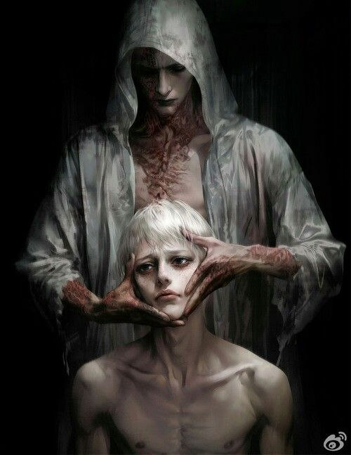